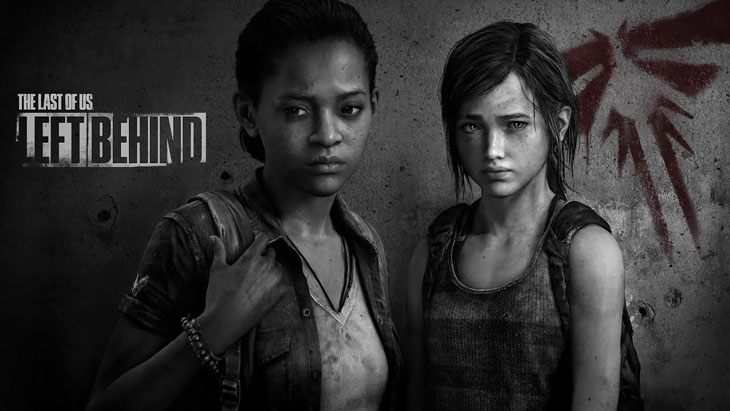

Left Behind es un DLC (contenido descargable, a fin de cuentas) que viene incluido con la edición deluxe del juego. Es un remake del DLC del mismo nombre que salió junto al juego original. Al igual que el juego base, todos los modelos y texturas tuvieron un cambio total.
En cierto momento de la historia principal, Ellie se encuentra en un centro comercial donde debe asistir a Joel por una herida que tiene. Es ahí donde comienza a recordar un hecho importante que le había ocurrido meses atrás.
En sus recuerdos, ella escapaba con su mejor amiga Riley de un instituto de adoctrinamiento de FEDRA. Es su amiga quien le cuenta sobre las Luciérnagas y cómo piensan oponerse a su control opresivo, por lo que quiere llevarla a una zona de juegos dentro de un centro comercial para que vea cómo es la vida libre de la opresión y pueda disfrutar una noche.
Riley Abel es la mejor amiga de Ellie, ella tiene 16 años, vive en la zona de Boston y es partidaria de Las Luciérnagas en lugar de FEDRA ya que no coincide con los ideales de este partido opresor. Ella, para invitar a Ellie a escapar del campo, entra por su ventana y la muerde del brazo para hacerle creer que era un infectado, cosa que casi le cuesta la vida. Luego de charlar un rato la convence y se escapan a un centro comercial libre de infectados y otros peligros en donde ella quería enseñarle la zona de arcades, así convenciéndola de pasar una noche "maravillosa"